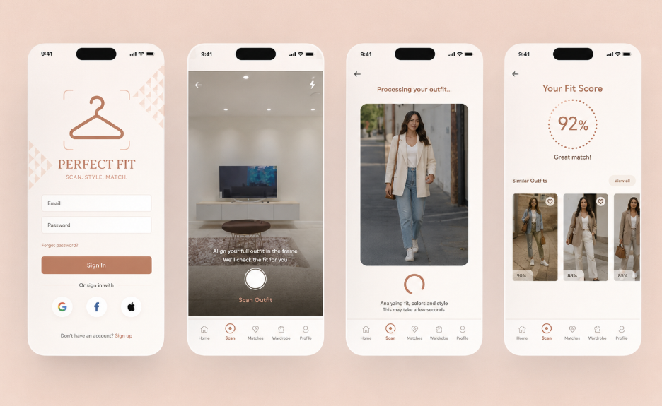

Perfect Fit is een mobiele applicatie die gebruikers helpt outfits te scannen, combineren en opslaan — met een persoonlijk stijlprofiel als kern.
De Uitdaging
Veel mensen staan elke ochtend voor hun kledingkast zonder te weten wat ze moeten aantrekken. De uitdaging was om een interface te ontwerpen die outfit-suggesties geeft op basis van gescande kledingstukken, zonder overweldigend aan te voelen.
De focus lag op een heldere user flow: scannen → bewaren → combineren, met zo min mogelijk stappen tussen de gebruiker en het resultaat.
Werkproces
Doelgroep bepalen, bestaande apps analyseren en user needs in kaart brengen via een korte enquête.
Lo-fi schetsen van de kern-flow: onboarding, scanscherm, kledingkast-overzicht en outfit-builder.
Kleurenpalet, typografie en componenten uitwerken in Figma. Consistente design tokens opgesteld.
Interactief klikbaar prototype gebouwd en getest met medestudenten voor feedback.
Eindresultaat
Het eindprototype toont een volledige user flow van het eerste opstarten tot het samenstellen van een outfit. De interface gebruikt een neutraal kleurenpalet zodat de kleding centraal staat.
Microanimaties geven feedback bij het scannen en opslaan, zodat de app direct reageert op de acties van de gebruiker.

Wat ik leerde
Zelfs een korte test van 5 minuten met medestudenten leverde waardevolle inzichten op over de navigatie.
Door vroeg in het proces components op te stellen, was het aanpassen van het design later veel sneller.
De eerste versie had te veel opties op één scherm. Vereenvoudigen maakte de flow direct duidelijker.